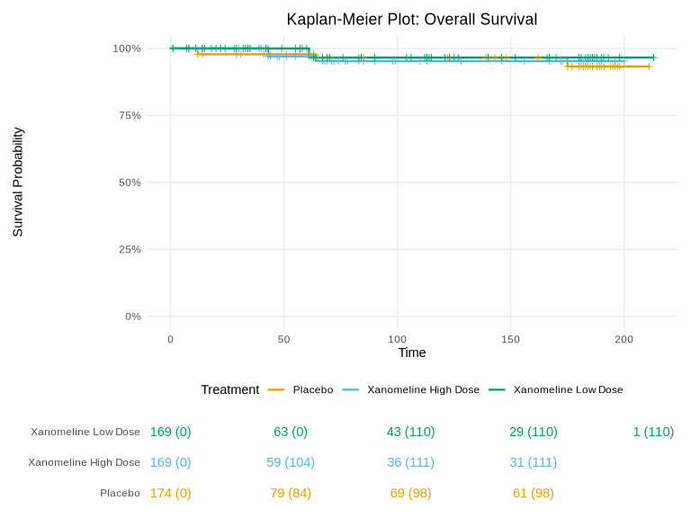

pharmhand creates clinical study tables and reports from ADaM datasets. It uses S7 classes to structure clinical data and outputs formatted tables and plots for Word documents.
Installation
# install.packages("pak")
pak::pak("sims1253/pharmhand")Examples
Demographics Table
adam_data <- ADaMData(data = adsl, trt_var = "TRT01P")
demo_table <- create_demographics_table(adam_data)
demo_table@flextable
Kaplan-Meier Plot
km <- create_km_plot(
data = adtte,
time_var = "AVAL",
event_var = "CNSR",
trt_var = "ARM",
title = "Kaplan-Meier Plot: Overall Survival",
risk_table = TRUE,
show_median = TRUE
)
km@plot
Quick Start
library(pharmhand)
# Wrap ADaM data with automatic population filtering
adam_data <- ADaMData(
data = adsl,
domain = "ADSL",
population = "SAF",
trt_var = "TRT01A"
)
# Access filtered data and treatment counts directly
adam_data@filtered_data # Auto-filtered to SAFFL == "Y"
adam_data@trt_n # Treatment group N's computed automaticallyKey Features
Efficacy Tables
# Time-to-event summary with median, HR, and landmarks
tte_table <- create_tte_summary_table(
adtte,
time_var = "AVAL",
event_var = "CNSR",
trt_var = "TRT01A",
landmarks = c(6, 12)
)
# Responder analysis with CI, OR, RR, RD
responder_table <- create_responder_table(
adrs,
response_var = "AVALC",
trt_var = "TRT01A",
effect_measure = "OR"
)Safety Tables
# AE Overview, by SOC, most common
create_ae_summary_table(adae, adsl, type = "overview")
create_ae_summary_table(adae, adsl, type = "soc")
create_ae_summary_table(adae, adsl, type = "common", n_top = 15)Report Generation
# Build and export a complete report
report <- ClinicalReport(
study_id = "STUDY-001",
study_title = "Phase III Clinical Trial"
)
section <- ReportSection(title = "Efficacy Results", section_type = "efficacy")
section <- add_content(section, tte_table)
section <- add_content(section, km_plot)
report <- add_section(report, section)
generate_word(report, "study_report.docx")G-BA Module 4 Compliance
# Create and validate G-BA compliant tables
module4_table <- create_hta_module4_table()
module4_table <- to_gba_template(module4_table)
check_gba_compliance(module4_table, strict = FALSE)Meta-Analysis & Evidence Synthesis
# Random-effects meta-analysis
result <- meta_analysis(
yi = log(c(0.75, 0.82, 0.68, 0.91, 0.77)),
sei = c(0.12, 0.15, 0.18, 0.14, 0.11),
study_labels = paste("Study", 1:5),
effect_measure = "hr",
model = "random"
)
result@estimate
result@heterogeneity$I2
# Forest plot
forest_plot <- create_meta_forest_plot(result, title = "Treatment Effect")
forest_plot@plot
# Network meta-analysis
nma_data <- data.frame(
study = c("S1", "S2", "S3"),
treat1 = c("A", "B", "A"),
treat2 = c("B", "C", "C"),
effect = log(c(0.75, 0.90, 0.80)),
se = c(0.12, 0.15, 0.18)
)
nma_result <- network_meta(nma_data, effect_measure = "hr")
nma_result$summaryClasses
-
ADaMData- ADaM dataset wrapper with population filtering -
Endpoint/HTAEndpoint- Endpoint definitions for analyses -
Study- Base class withSingleArmStudy,TwoArmStudy,MultiArmStudy -
StudySet- Collection of studies for evidence synthesis -
ClinicalTable- Table with formatting -
ClinicalPlot- Plot with export settings -
ClinicalReport- Report with sections -
StudyResult- Container for single-study results -
StatResult- Statistical result base class (ComparisonResult,MetaResult) -
EvidenceGrade- IQWiG evidence grading result
Learn More
Browse the full documentation.